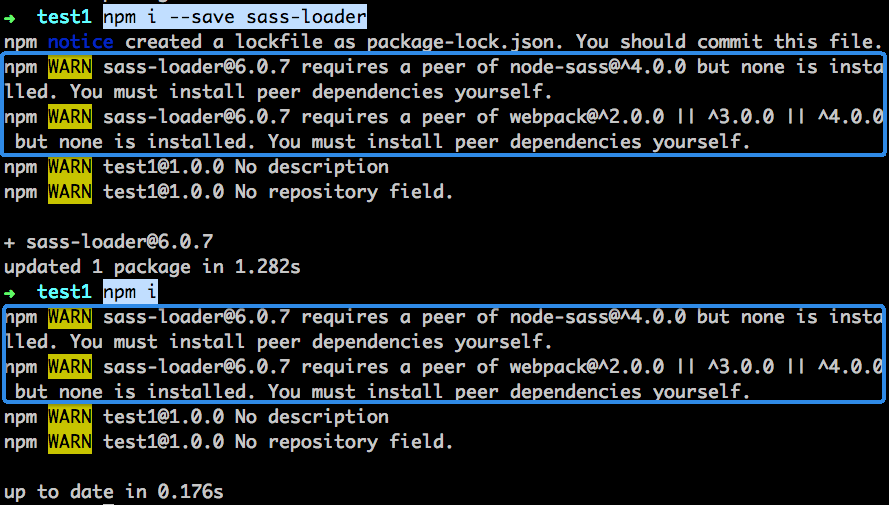

npm install会安装此配置中的包npm install $package，会把$package包写入dependencies配置项npm install --s $package，会把$package包写入dependencies配置项npm install会安装此配置中的包npm install --production，则不会安装此配置中的包npm install --dev $package，会把$package包写入此配置项中sass-loader是为webpack开发的加载器，其兼容webpack 2.x到4.x版本，那么便可在该包的peerDependencies配置项中，写入"webpack": "^2.0.0 || ^3.0.0 || ^4.0.0"
其他从字面意思理解
>、>=、<、<=、*、|| 等
@flyme:registry=http://appff.meizu.com:8888/
registry=https://registry.npm.taobao.org
"publishConfig": {
"registry": "http://appff.meizu.com:8888/"
}